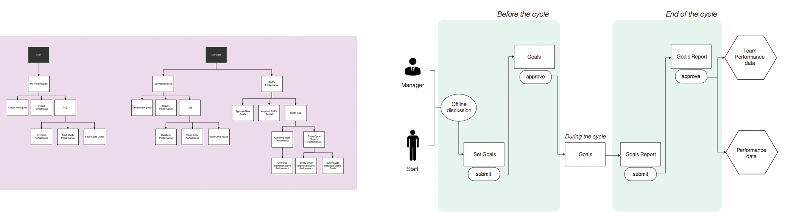
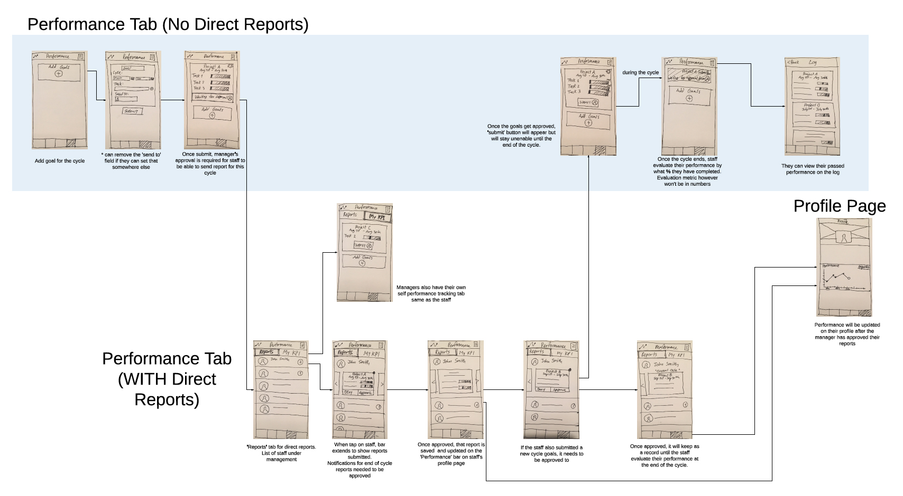
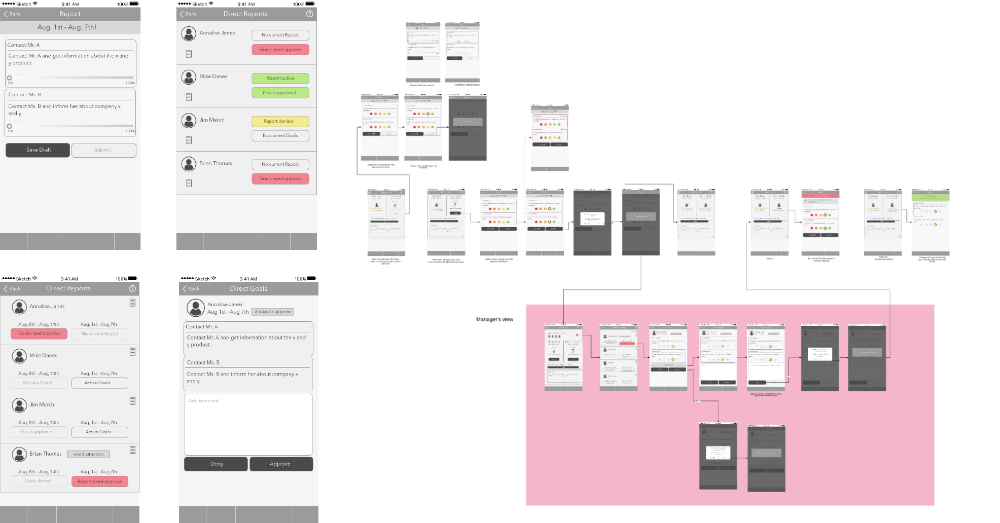
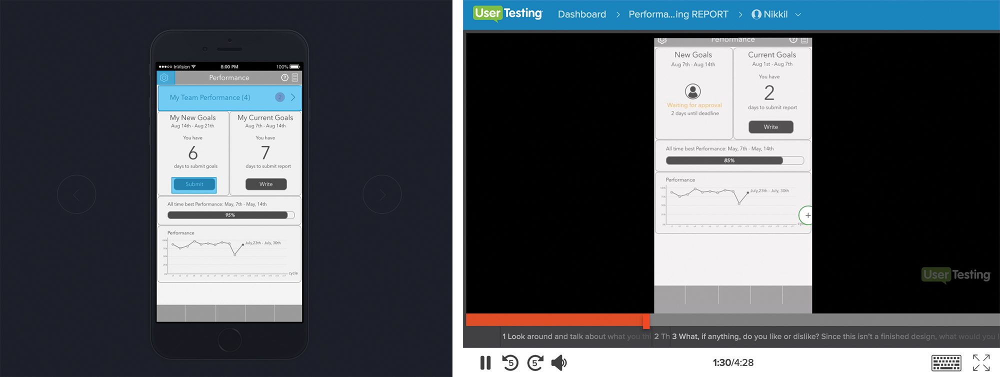
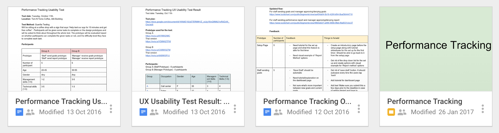
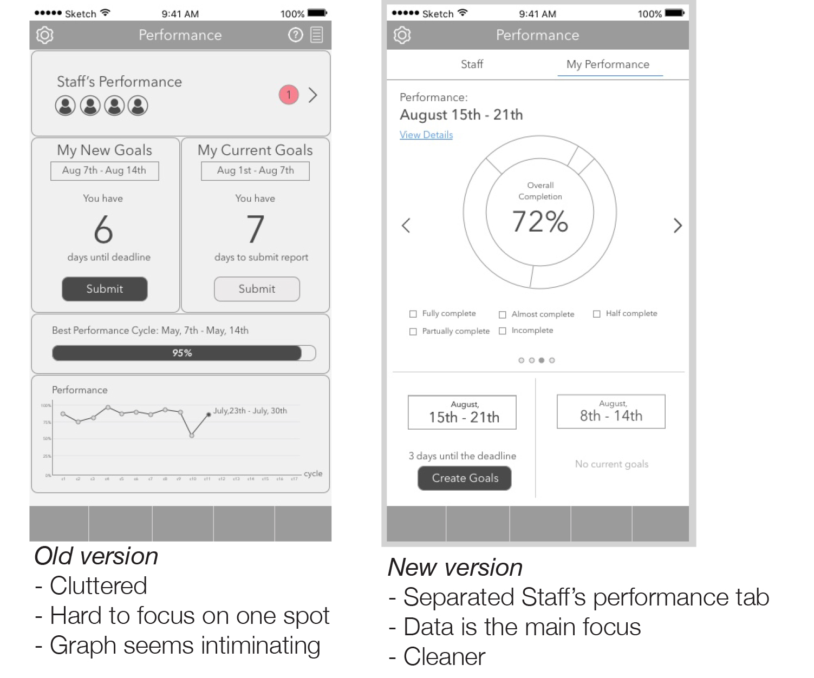
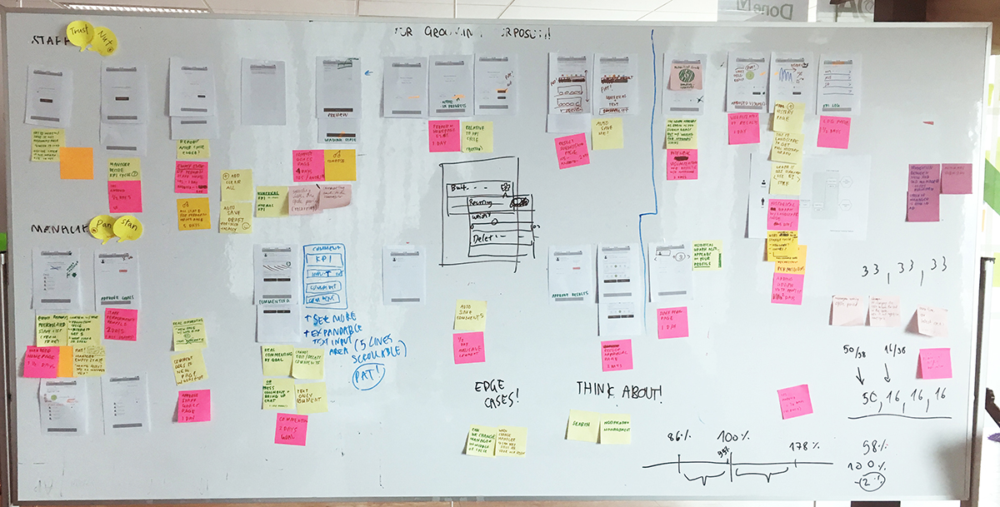
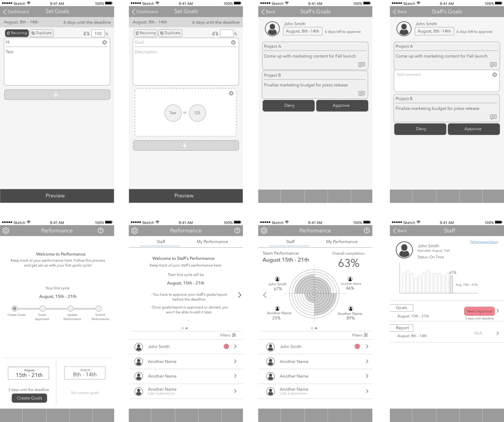

Nov 2016 - Current
This is a KPI (Key Performance Indicator) tracking system, a new feature to an enterprise communication app.
☻ ☻ ☻
The goal was to build a simple and measurable self-evaluated KPI tracking tool, mostly to help managers keep track of their teams. Managers could evaluate their team’s success easily from their mobile devices.
Our client was a big enterprise company with many layers of managers and many different teams. Managers are busy. They wanted a simple tool that shows simple visualization of their staff's performance.
The product team came up with 2 personas for manager and staff. I used these personas to design the information architecture and figure out what each user type wants, needs, and the tasks they have to perform to achieve their goals.

The structure of the feature

Initial wireframes and sketch flow
The first wireframe flow was done on my sketchbook. After some modifications on the layout, I made the first high-resolution wireframes in Sketch. The wireframes flow was reviewed using Heuristic Evaluation system to prevent any missing edge cases.
More information on Heuristic Evaluation: Here

Early high-resolution wireframes and flow
Using the wireframes, I put together four Invision prototypes with four different user journeys.
The prototypes were sent to 5 users via Usertesting.com. I gave each of them a task to complete and they sent the video of their screen and their voice record while trying to complete the task.

Clickable prototype on Invision and screen video with sound of people interacting with the prototype
The tests showed that the wording that I was using caused confusion. For example, managers have to keep track of both their own KPI and their team members KPI. In the test, the wording for the team's performance was “My Team Performance”. It was obvious that the users thought “My Team Performance” indicated that the team included themselves, rather than it being just the employees managed by them. I changed the wording to “Staff's Performance” and sent the prototype to more users. Users didn't have any more confusions after that.
I shared my test results to the team after every testing session. I wrote down the test details, the problems users had, the solutions to the problems, the severity of the problems, and some quotations from the users regarding the problems.

Some of the documents
The wireframes were iterated on after the online testing. With limited budget, I conducted guerrilla testing with ten participants at a coffee shop in our office building to get more insights. Five of the participants with more management skills got to test on the manager journey and the other five did the staff journey.
Inputing goals and reporting performance were simple. However, almost all users paused every time they reached the dashboard. I realized how intimidating data looked, so I decided to make some major layout changes on the dashboard and simplify how the data was presented. For managers, Staff's performance was moved to a separate tab to make it as important as their own performance.

The wireframes were then being iterated more from the added requirements. The PO and I printed out the updated wireframes and put them on a white board. We used the board for the grooming sessions and stand ups with the engineers and UI designers.

The board for groomings and stand ups
I worked closely with the engineers and UI designers during the UI design process as more cases came up. The first version on this feature was launched internally, and then deployed to the client in April. We already plan on talking to the real users in the near future.

Some of the latest design
During the process of designing this feature, I learned to be very thorough with all the what ifs so I don't slow the team down later on in the process. I also became better at communicating difficult and complicated concept clearly to the team, getting everyone on the same page through out the whole design process.
- - - - - - - - - - - - - - - - - - - - - - -